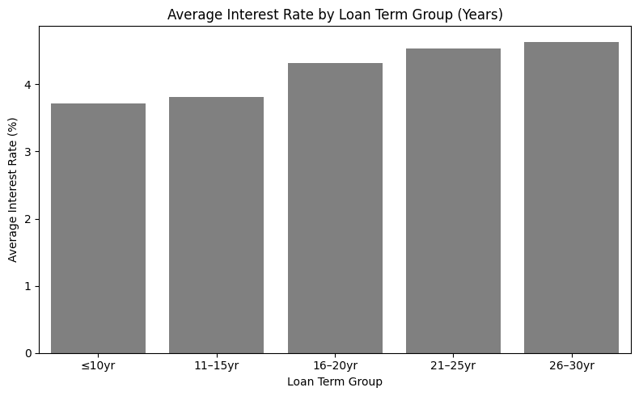

Analyzing the Determinants of Mortgage Loan Interest Rates
Tools & Methods: Python (pandas, statsmodels, scikit-learn), OLS, Decision Tree, Random Forest, SVR

Project Summary
Using a 2011 cohort from the Freddie Mac Single-Family Loan-Level dataset, this project studied how borrower and loan characteristics relate to interest rates. I built an econometrics pipeline (OLS with robust errors, semi-log specification, state fixed effects) and contrasted it with ML regressors (Decision Tree, Random Forest, SVR) to benchmark predictive power. The results highlight the trade-off between interpretability (econometrics) and prediction (ML).
Dataset
- Source: Freddie Mac Single-Family Loan-Level (public sample; 2011 originations)
- Variables used: Credit Score, DTI, LTV, UPB, Interest Rate, Loan Term (months), State
- Cleaning: Removed placeholder codes (DTI=999, LTV=999, Credit_Score=9999), and checked for missing values
- Features: UPB in thousands;
log_Credit_Score,log_UPB; binned loan term into ≤10, 11–15, 16–20, 21–25, 26–30 years
How I Did It
- Exploratory analysis: Interest rates concentrated in a narrow band (~3.9%–4.8%). Longer loan terms associated with higher average rates; DTI and LTV skewed right; Credit Score inversely related to rate; modest correlations among predictors.
- Econometrics: OLS with HC1 robust SE; F-test confirms joint significance; semi-log specification; state fixed effects to absorb geography.
- ML benchmark: Train/test split (80/20). Decision Tree, Random Forest, SVR (RBF) with hyperparameter tuning (GridSearchCV); scaling for SVR.
| Variable | coef | std err | z | P>|z| | [0.025 | 0.975] |
|---|---|---|---|---|---|---|
| Intercept | 5.1846 | 0.062 | 83.482 | 0.000 | 5.063 | 5.306 |
| Credit_Score | -0.0020 | 0.0000758 | -26.790 | 0.000 | -0.002 | -0.002 |
| DTI | 0.0075 | 0.0003 | 25.563 | 0.000 | 0.007 | 0.008 |
| UPB_Thousands | -0.0001 | 0.0000228 | -5.517 | 0.000 | -0.0001 | -0.0000812 |
| LTV | 0.0074 | 0.00017 | 43.833 | 0.000 | 0.007 | 0.008 |
| R² = 0.110, Adj. R² = 0.109, F = 1047 (p < 0.001), Log-L = −27289, Covariance = HC1 | ||||||
| Model | R² | Adj. R² | F-stat | N |
|---|---|---|---|---|
| Baseline OLS (4 vars) | 0.110 | 0.109 | 1047 | 34,577 |
| + State Fixed Effects | 0.148 | 0.147 | 1117 | 34,577 |
Average Interest Rate by Loan Term

Quantified Results
- OLS (robust SE): R² ≈ 0.110 (Adj. R² ≈ 0.109). All four predictors jointly significant (F ≈ 1047, p < 0.001).
- Coefficients (levels model):
- Credit Score: −0.002 pts per 1-point increase (holding others fixed)
- DTI: +0.0075 pts per 1-pt increase
- LTV: +0.0074 pts per 1-pt increase
- UPB (thousands): −0.0001 pts per +$1k
- Semi-log OLS: R² ≈ 0.113 (slightly better fit; more stable elasticities).
- State fixed effects: R² ≈ 0.148 (Adj. R² ≈ 0.147) → geography explains additional variation.
ML Benchmark (Hold-out Test Set)
- Decision Tree (tuned): RMSE ≈ 0.597 pts, R² ≈ 0.119
- SVR (RBF, tuned): RMSE ≈ 0.529 pts, R² ≈ 0.122
- Random Forest (tuned): RMSE ≈ 0.527 pts, R² ≈ 0.136
Interpretation: Interest rates in this sample lie in a narrow band (~0.9 pp wide), so an RMSE of ~0.53 percentage points is reasonable; tree/ensemble methods edge out OLS on prediction but don’t offer the same causal interpretability.
Key Findings
- Risk-based pricing confirmed: Borrowers with higher Debt-to-Income (DTI) ratios and higher Loan-to-Value (LTV) ratios tend to face higher interest rates, while borrowers with higher Credit Scores generally receive lower rates. All of these effects were statistically significant in the regression results.
- Geography matters: State fixed effects are meaningful, indicating cross-state pricing differences.
- Model fit is modest: Borrower/loan attributes explain only about 11–15% of the variation in rates; macroeconomic conditions and product-specific factors likely explain the rest.
- Machine Learning benchmark:
I implemented Decision Tree, Random Forest, and Support Vector Regression (SVR) models as predictive baselines.
- Decision Tree: Hyperparameters such as maximum depth, minimum samples per split, and leaf size were tuned via cross-validated grid search.
- Random Forest: Number of trees, depth, and splitting criteria were optimized using GridSearchCV to improve stability and reduce overfitting.
- SVR: Features were scaled with
StandardScaler; kernel type (RBF), regularization (C), and epsilon were tuned through grid search.
Challenges & Reflections
- Endogeneity / omitted variables: Not controlling for time (rate cycle), loan product, or macro indicators can bias coefficients; adding year/quarter fixed effects would help.